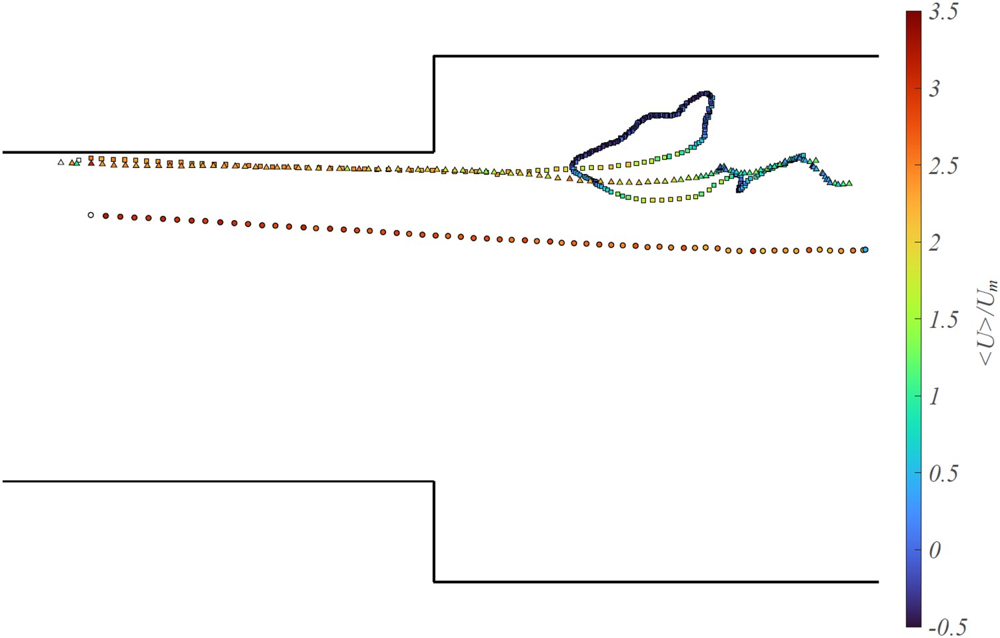
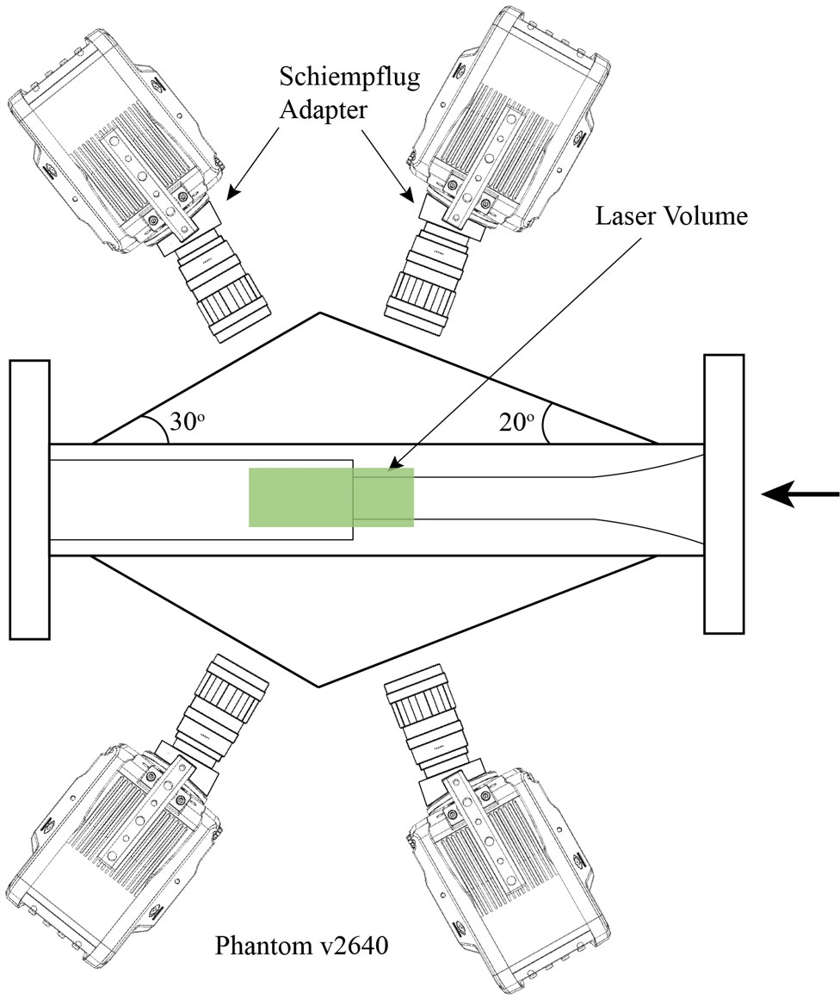
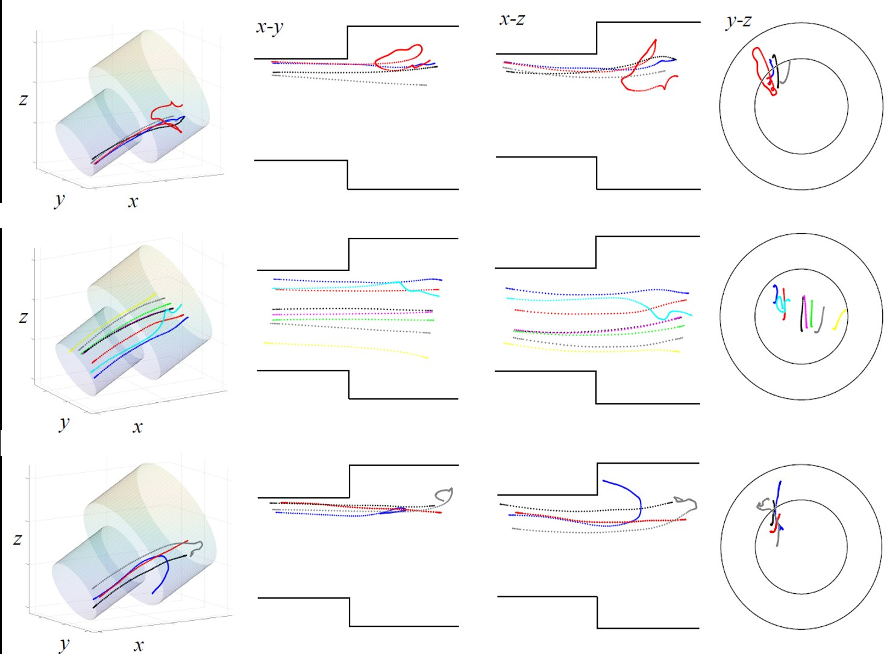

Inertial solids in pipe flow
Following solid spheres through fast flow in an index-matched pipe, across a sudden area change, with time-resolved tomographic tracking.

Overview
Pipelines often carry solids as well as fluid: sand in oil lines, catalyst in reactor loops, grit in water mains. Where the bore changes, the fluid reorganises within a diameter or two, but an inertial particle keeps its own momentum. It crosses streamlines, strikes the walls and can linger in fluid that is barely moving. The rules used to size such fittings come from pressure-drop correlations, not from watching where the particles go.
Experimental approach
A sodium iodide solution matches the refractive index of both the acrylic pipe and the acrylic spheres, so the curved wall stops distorting the view and the spheres stop casting shadows. Four high-speed cameras record a 64 × 40 × 30 mm volume across the area change at 8,800 frames per second, and Shake-The-Box tracking follows 1.6–3.2 mm spheres together with the tracer particles around them.
Status
Ongoing. The measurements for a sudden expansion and a sudden contraction are recorded and reconstructed, and the analysis is under way.
Figures and videos

